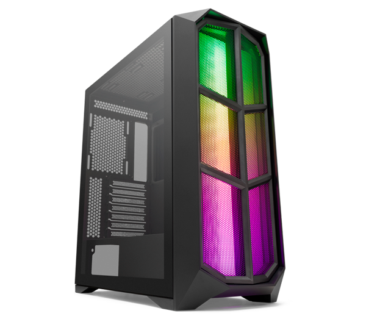
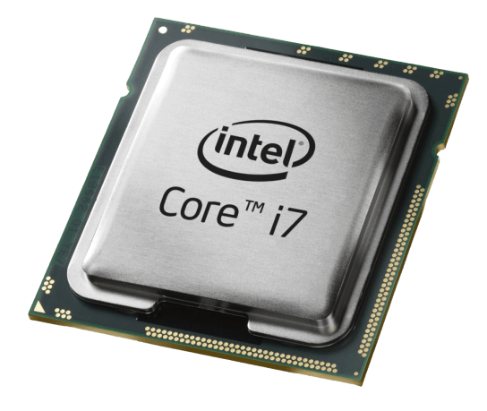
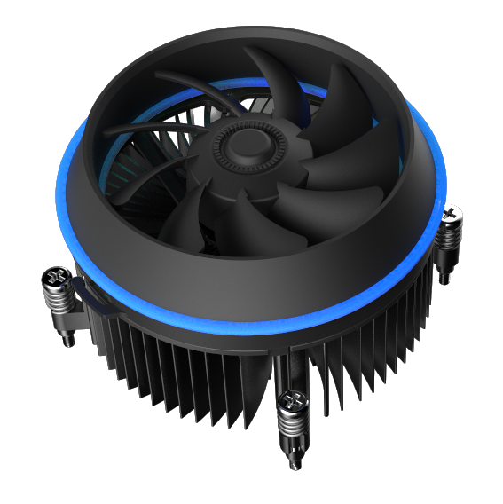
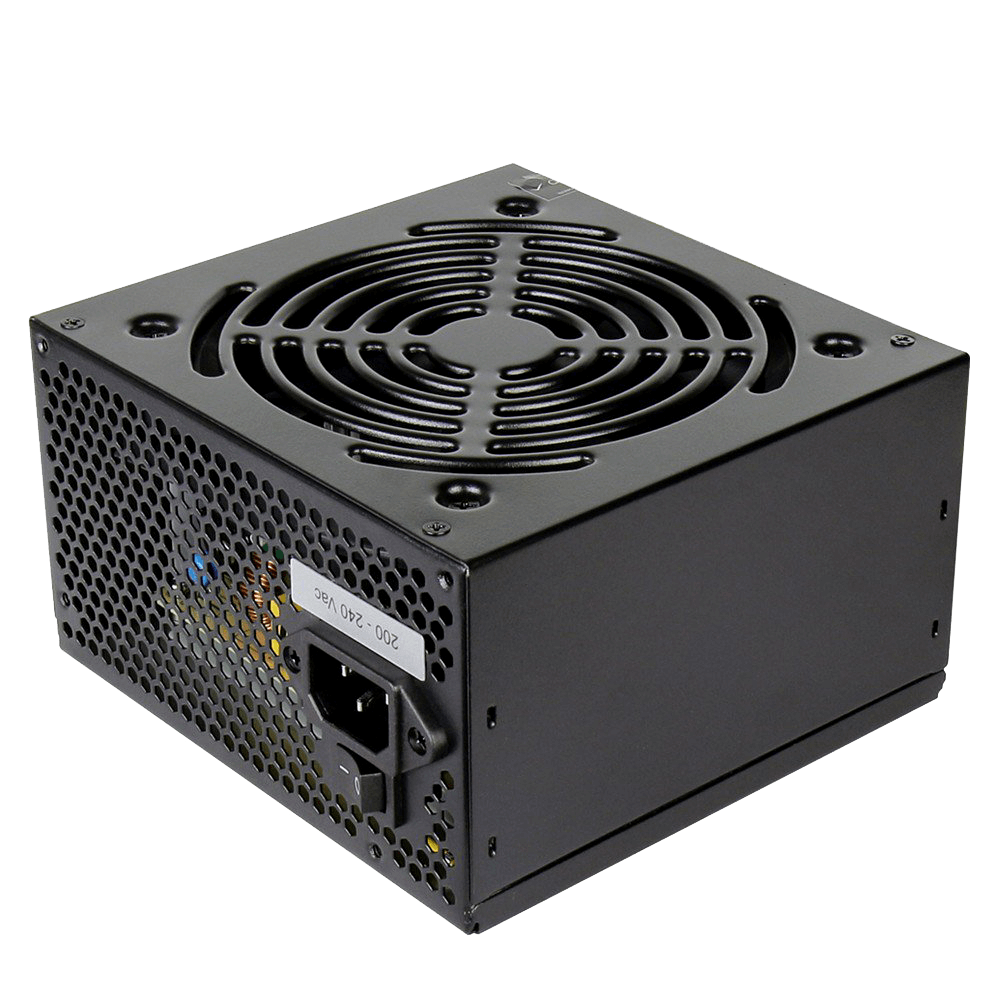

PROGRAMAÇÃO ORIENTADA A OBJETO:
O Java é uma linguagem de programação orientada a objetos e é uma das linguagens mais utilizadas pelas empresas na atualidade no desenvolvimento de aplicações WEB e Mobile. O Java foi criado em 1995 na empresa Sun Microsystem por uma equipe chefiada por James Gosling, conhecido como o pai do Java. Em 2008, o Java foi adquirido pela Oracle e vem crescendo bastante desde então no mercado de tecnologia.
Atualemnte é a segunda linguagem de programação mais popular do mundo, apenas atrás de C, e à frente de C++ e Objective C. o download e atualização da IDEA são gratuitos. Requisitos básicos: Windows XP ou posterior, Mac OS X 10.7.3 ou posterior, o Java também trabalha/roda na maioria dos sistemas Linux.
Principais Características do Java
- Orientada a Objetos;
- Independente de plataforma;
- Compilada;
- Interpretada;
- JDK (Java Development Kit);
- JRE (Java Runtime Environment).
SISTEMAS OPERACIONAIS:
Instalando o Windows XP
O Windows XP é um sistema operacional da Microsoft para computadores, desktop, notebooks, tablets e media centers. Lançado em 2001, o sistema foi muito bem recebido pelos usuários e continua sendo muito utilizado, mesmo após o encerramento do suporte em abril de 2014.
Alterando o IP do Windows 10
Endereço IP é um endereço exclusivo que identifica um dispositivo na Internet ou em uma rede local. IP vem do inglês "Internet Protocol" (protocolo de rede) que consiste em um conjunto de regras que regem o formato de dados enviados pela Internet ou por uma rede local..
Dual Boot Ubuntu e XP
Embora a maioria dos PCs tenha um único sistema operacional (SO) integrado, também é possível executar dois sistemas operacionais em um computador ao mesmo tempo. Portanto, podemos chamar esse processo como inicialização dupla (Dual Boot). Ele permite que os usuários alternem entre os sistemas operacionais dependendo das tarefas e programas com os quais estão trabalhando..
REDES E HARDWARE:
|

GABINETE |
O gabinete é a caixa retangular que protege todos os componentes internos do computador, como a placa-mãe, placa de vídeo e o HD, é lá que ficam as saídas pra conectar cabos HDMI e USB, o plug pra caixa de som e microfone, as entradas de cartão de memória e a portinha do DVD player. |

PLACA MÃE |
Pode-se entender a placa como uma central que une todas as partes do sistema numa só. Além de permitir o tráfego de informação, a placa também alimenta alguns periféricos com a energia que recebe da fonte do gabinete. Todas essas funções tornam o nome “mãe” algo bem lógico, pois, sem ela, o computador é apenas um amontoado de chips e placas independentes. |
|

PROCESSADOR |
CPU é a sigla para Central Process Unit, ou Unidade Central de Processamento. Ele é o principal item de hardware do computador, que também é conhecido como processador. A CPU é responsável por calcular e realizar tarefas determinadas pelo usuário e é considerado o CÉREBRO DO PC. |
|

COOLER |
Uma espécie de ventilador que tem a função de reduzir o calor gerado pelos componentes da máquina, principalmente o produzido pelo próprio processador. Ou seja, é o responsável por "refrescar o computador". |
|
SSD |
Os SSDs podem ser uma opção interessante para usuários que precisam de maior agilidade e desempenho em multitarefas. Esse tipo de armazenamento guarda arquivos em chips de memória Flash, o que acelera o acesso aos dados ali salvos.. |

MEMÓRIA RAM |
A Memória RAM é um espaço temporário de informações do sistema operacional e de aplicativos em uso, e quando a tarefa é concluída, os arquivos são movidos para o HD ou SSD. Isso fornece ao seu processador fácil acesso as informações essenciais para executar seus programas. A quantidade de RAM quantos aplicativos você poderá utilizar de uma só vez e mais rápido será a velocidade de carregamento de páginas e arquivos. |
|

FONTE |
A fonte de energia do computador é responsável por converter a voltagem da energia elétrica, que chega pelas tomadas, em voltagens menores, capazes de ser suportadas pelos componentes do computador. |
LINGUAGEM DE MARCAÇÃO:
HTML
HTML (Linguagem de Marcação de HiperTexto) é o bloco de construção mais básico da web, a palavra "Hipertexto" refere-se aos links que conectam páginas da Web entre si, seja dentro de um único site ou entre sites. O HTML utiliza tags para "colocar" textos, imagens e outros conteúdos para exibição em uma página Web. A marcação HTML inclui tags específicas para funções específicas, por exemplo: a tag "header" é usada para criar um cabeçalho; os Títulos são feitos a partir do "h1", "h2", "h3" etc.
CSS
CSS é chamado de linguagem Cascading Style Sheet e é usado para estilizar elementos escritos em uma linguagem de marcação como HTML. O CSS separa o conteúdo da representação visual do site. Pense na decoração da sua página. Utilizando o CSS é possível alterar a cor do texto e do fundo, fonte e espaçamento entre parágrafos. Também pode criar tabelas, usar variações de layouts, ajustar imagens para suas respectivas telas e assim por diante.
PROJETOS:

Site Galeria NBA

Site Cidade Invisível

Site Hamburgueria